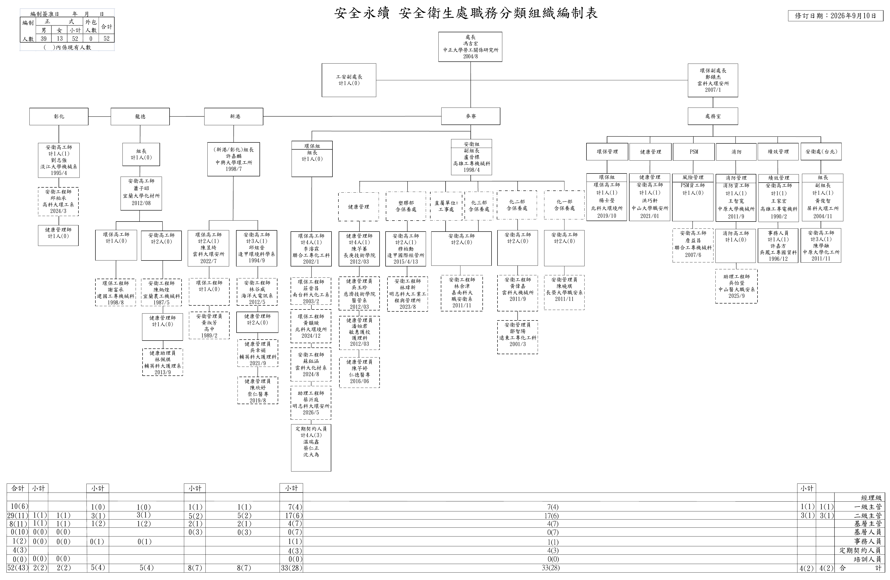

固定版型組織圖
依 R41 原稿比例 2976.22 × 1941.38 pt（約 1049.94 × 684.88 mm）

安全衛生處組織編制表
修訂日期：2026年9月10日
人員資料
| 姓名 | 職稱 | 單位 | 到職年月 | 職務層級 | 人員類別 | 狀態 | 版次 | 操作 |
|---|
| 版次 | 修訂日期 | 異動筆數 | 版本說明 | 操作 |
|---|
| 組織節點 | 顯示名稱 | 編制人數 | 現有人數 |
|---|